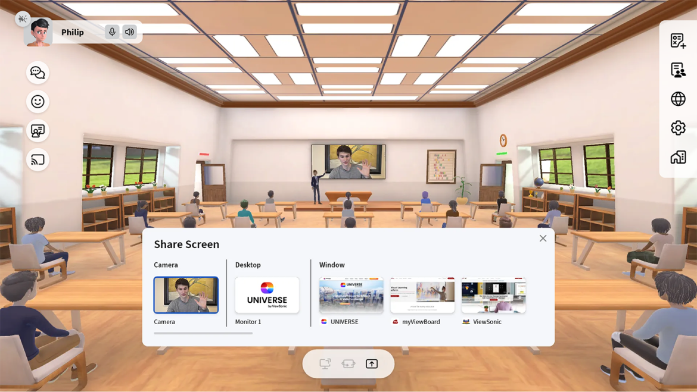

Nhu cầu chuyển đổi số trong ngành giáo dục
Giáo dục là một trong những lĩnh vực quan tâm hàng đầu của Chính phủ. Đưa công nghệ tiên tiến để đổi mới và hiện đại hóa phương pháp giảng dạy và đào tạo nhằm đáp ứng các mục tiêu chuyển đổi số của ngành là vô cùng cấp bách. Có 3 ứng dụng phổ biến của chuyển đổi số lĩnh vực Giáo dục gồm: Ứng dụng công nghệ trong phương thức giảng dạy, ứng dụng công nghệ trong quản lý đào tạo và ứng dụng công nghệ trong thực tế lớp học.
Nhờ xu hướng học trực tuyến, công nghệ đã tạo ra không gian giảng dạy, học tập mới vô cùng linh hoạt - nơi mà giáo viên có thể tạo ra các bài giảng kỹ thuật số hấp dẫn và học sinh, sinh viên có thể tiếp thu kiến thức một cách thuận tiện, dễ dàng trên các thiết bị điện tử. Điều này giống như mở ra một nền giáo dục mở – mới mẻ và hiện đại. Ở mọi thời điểm, tại bất kỳ đâu, tất cả mọi người đều tiếp nhận được thông tin kiến thức một cách đa dạng, nhanh chóng. công nghệ số giúp loại bỏ hết giới hạn về khoảng cách và thời gian, tối ưu vấn đề dạy và học.
GIẢI PHÁP GIÁO DỤC THÔNG MINH VIEWSONIC - CEMCO
Giải pháp Giáo dục Thông minh toàn diện của ViewSonic - CEMCO với Màn hình hiển thị chuyên dụng chia sẻ kết nối không dây Series CDE30, Màn hình All - in - one Direct View LED, Hệ sinh thái Phần mềm myViewBoard và Trường học ảo Universe by ViewSonic mang đến mô hình Giáo dục thông minh, hiện đại, giúp nâng cao hiệu quả giảng dạy và học tập.
Mô hình giải pháp
Nâng cao chất lượng giảng dạy với các sản phẩm của ViewSonic - CEMCO
Màn hiển thị chuyên dụng chia sẻ kết nối không dây Series CDE 30 và All -in -one Direct View LED có độ phân giải Ultra HD 4K sắc nét cao đến từng chi tiết về text và hình ảnh, kết hợp với âm thanh sống động sẽ tạo nên những bài giảng tuyệt vời
Màn hình All-in-One Direct View LED
Với màn hình lớn tới 216 inch, Direct View LED hoàn toàn phù hợp với các phòng học đến các giảng đường lớn
Dễ dàng di chuyển giữa các giảng đường (Model LDS135" - Duy nhất trên thế giới)
Dễ dàng lắp đặt và bảo trì mặt trước
Xem thêm
Màn hình chuyên dụng hiển thị chia sẻ kết nối không dây CDE30 Series
- Phù hợp với mọi không gian lớp học
- Khả năng mở rộng kích thước hiện thị đa dạng với tính năng ghép màn hình 1x1, 1x2, 1x3, 2x2, 2x3, 3x3
- Khả năng hiển thị linh hoạt theo chế độ ngang, dọc
Chứng chỉ EPEAT về bảo vệ môi trường của Mỹ. Tiết kiệm năng lượng, toả nhiệt cực thấp
Xem thêmBảng tương tác kỹ thuật số
- Màn hình cảm ứng 24 inch FULL HD
- Sử dụng bút MPP2.0 mang lại độ chính xác cao
- Tương thích với tất cả các thiết bị hỗ trợ Microsoft Pen Protocol
- Công nghệ cảm ứng PCAP cho phản hồi nhanh và chính xác
- Cho phép giáo viên, học viên ghi chú, phác thảo ý tưởng và kết nối với người xem tốt hơn
Hệ sinh thái Giáo dục MyViewBoard
Nền tảng myViewBoard cung cấp nhiều công cụ, tích hợp nhiều tính năng giúp việc giảng dạy và học tập online và trực tiếp trở nên đơn giản, trực quan, không bị giới hạn về không gian và thời gian.
- Whiteboard: Cung cấp bảng trắng kỹ thuật số và các tính năng để trình bày bài học nhằm nâng cao khả năng tương tác giữa người dạy và người học
- Hỗ trợ quản lý lớp học trực tuyến: Quản lý thái độ học tập, hỗ trợ chia nhóm và giao bài tập độc lập cho từng nhóm, giúp người học có thể trao đổi trực tuyến với nhau, tăng độ tương tác và thu hút sự chú ý người học
- Có thể lưu trữ trên điện toán đám mây: Người dạy có thể lưu trữ ngay trên tài khoản myViewBoard hoặc sử dụng các liên kết đến Google Drive, OneDrive, Dropbox của myViewBoard để tải lên các tài liệu dung lượng lớn. Điều này sẽ giúp người dùng dễ dàng lưu trữ, sử dụng tài liệu trên nhiều thiết bị khác nhau và chia sẻ bài giảng qua lưu trữ đám mây.
- Có thể lưu video để xem lại và chia sẻ lên các mạng xã hội: Hỗ trợ tính năng ghi màn hình, giúp ghi lại toàn bộ nội dung bài, chia sẻ trên các trang mạng xã hội
- Giúp tạo ra các bài giảng thú vị nâng cao hứng thú của người học: người dạy có thể tham khảo bài giảng trên nền tảng myViewboard, tải về và ứng dụng trong bài giảng của mình, giúp tăng tính sinh động, trực quan, thu hút sự chú ý của người học
Mô hình STEAM trong giáo dục
STEAM là mô hình giáo dục phát triển kiến thức kỹ năng về khoa học kết hợp với nghệ thuật, giúp học sinh phát triển tư duy sáng tạo ở nhiều khía cạnh trong học tập và cuộc sống.
Các giải pháp & thiết bị của ViewSonic - CEMCO sẽ cho phép học sinh, sinh viên tham gia học tập và dễ dàng chia sẻ ý tưởng, hợp tác và thuyết trình bài giảng từ bất kỳ đâu.
Màn hình hiển thị chuyên dụng chia sẻ kết nối không dây Series CDE30 và Hệ sinh thái phần mềm myViewBoard giúp việc ứng dụng giảng dạy theo mô hình STEAM hiệu quả.
Trường học ảo Universe by ViewSonic áp dụng công nghệ Metaverse vào giảng dạy
Metaverse hay còn gọi là vũ trụ ảo, là khái niệm về vũ trụ kỹ thuật số được tạo nên giữa nền tảng công nghệ ảo (VR) và thực tế ảo tăng cường (AR) hoặc đồ họa đa chiều,… nhằm tạo ra một nền tảng xã hội đặc biệt. Metaverse cho phép người dụng có thể tương tác và trải nghiệm chân thực như ở ngoài thế giới thực
- Ứng dụng môi trường 3D sống động tạo dựng ra một thể giới ảo Metaverse.
- Tạo ra nhiều không gian tương tác cho người dạy và học như: lớp học, hội trường, không gian sinh hoạt chung.
- Người học có thể tham gia vào các không gian chung để cùng nhau học tập & thảo thuận nhómv
- Người dạy có thể chuyển đổi giữa hai chế độ giảng dạy và thảo luận, kết hợp cùng với các dữ liệu báo cáo theo thời gian thực được hệ thống tự động tổng hợp về các thông tin lớp học, mực độ tương tác và tập trung của học sinh để giáo viên có các hành động giúp nâng cao chất lượng buổi học ngay lập tức.
Lợi ích mang lại
Giúp việc dạy và học không bị gián đoạn do các yếu tố khách quan như dịch bệnh, thời tiết.
Khuyến khích khả năng hợp tác, trao đổi chia sẻ kiến thức
Phù hợp với nhiều phương thức học
Tăng khả năng tương tác giữa người dạy và người học
Cải thiện trải nghiệm học tập của người học